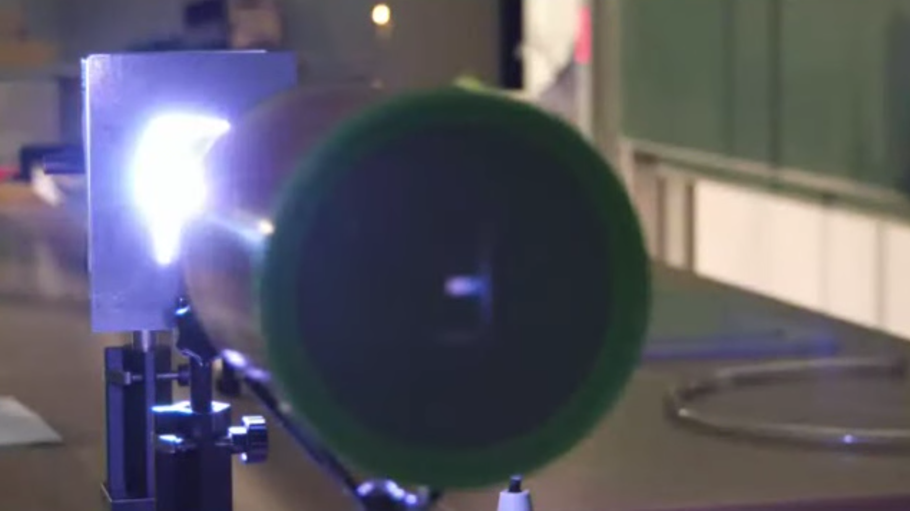
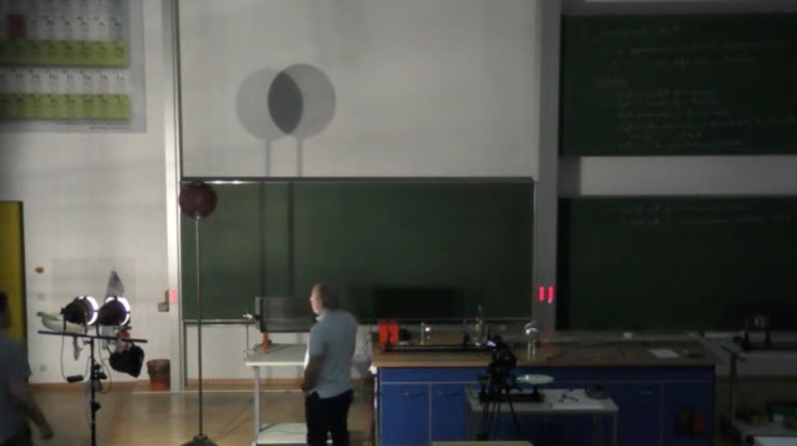

This page was generated from `source/notebooks/L1/Geometrical Optics.ipynb`_.

Geometrical Optics¶
Geometrical optics refers to a field of optics that describes light propagation in terms of rays. This is on one side borrowed from your daily experience, for example, with shadows. On a more scientific side, it will turn out that geometrical optics is the approximation in which the wavelength of light is much shorter.
Geometrical Optics
Geometrical optics is an approximate description of light propagation in the limit of infinitely small wavelength, where all wave phenomena like diffraction can be neglected.
Assumptions¶
As geometrical optics is not a rigorous description, we have to write down some postulates (things we do not understand yet) to describe light propagation in geometrical optics
light rays emerge from a light source
light rays are detected by a detector
light propagates in straight line paths (rays) in a homogeneous medium
light–matter interaction is characterized by a refractive index \(n\)
light bends to a curved path in inhomogeneous media (i.e., \(n(\vec{r})\))
rays may be reflected and refracted at interfaces between media
Let us have a look at some examples providing indications for the linear propagation of light.
Laser
Pinhole Camera
|
|---|
Fig.: Schematics of a pinhole camera. |

 |
|---|
Fig.: Image of an upright letter “F” on the screen of a pinhole camera in lecture 1. |
 |
|---|
Fig.: Core shadow and partial shadows behind a disk when illuminated with two seperate light sources. |
Water Basin with Salt
|
|---|
Fig.: Bend rays in a refractive index gradient with a salt (NaCl) layer on the bottom. |